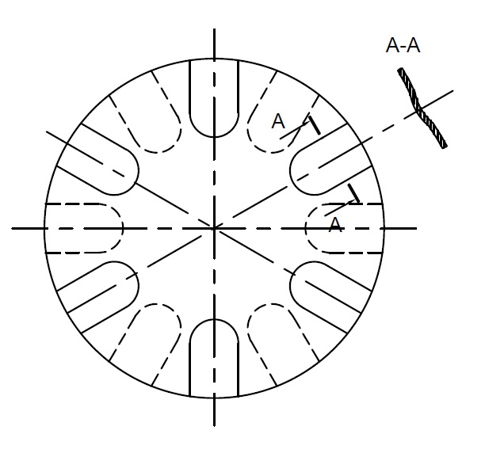

Принципиальная схема анодно-механической резки показана на рисунке. Зажимы генератора 1 постоянного тока низкого напряжения соединены с конечными точками цепи (электродами) разрезаемым металлом 2 и диском-инструментом 3. Электрод-металл как соединенный с положительным полюсом генератора служит анодом, а электрод-инструмент, соединенный с положительным полюсом генератора служит анодом, а электрод-инструмент, соединенный с отрицательным полюсом, является катодом. В межэлектродное пространство в зону реза по трубке 4 подводится рабочая жидкость, проводящая электрический ток (электролит), которая при резке замыкает электрическую цепь.
Под действием электрического тока металл в зоне разрушается и в виде расплавленных частиц удаляется из полости раздела вращающимся электродом-инструметом и струей рабочей жидкости.
В процессе анодно-механической резки происходит также интенсивное разрушение (уменьшение диаметра) электрода-диска, но в значительно меньшей степени, чем разрезаемого металла. Подача диска в направлении резки обеспечивает продолжение процесса до окончательного отделения заготовки от разрезаемого металла.
При анодно-механической резке усилия, действующие на электрод-инструмент в процессе резки, весьма незначительны; производительность процесса практически не зависит от механических свойств металла.
Для питания цепи при анодно-механической резке, как правило, применяется постоянный ток. Электрические режимы резки характеризуются силой тока в цепи электродов и напряжением. Напряжение при холостом ходе, когда нагрузка отсутствует, немногим превышает рабочее напряжение и находится в пределах 22-32В.
Производительность и режимы анодно-механической резки
| Размеры сечения, мм | Механический режим | Электрический режим | ||
|---|---|---|---|---|
| Подача, мм/мин | Время резки, мин | Сила тока, А | Рабочее напряжение, В | |
| Круглое сечение | ||||
| 40 | 27 | 1,5 | 80 | 20-22 |
| 60 | 24 | 2,5 | 100 | 20-22 |
| 80 | 20 | 4 | 120 | 20-22 |
| 100 | 18 | 5,5 | 150 | 22-24 |
| 125 | 12,5 | 10 | 175 | 22-24 |
| 150 | 11,5 | 13 | 225 | 24-26 |
| 200 | 10,5 | 19 | 300 | 24-26 |
| 250 | 9,6 | 26 | 350 | 26-28 |
| 300 | 8,6 | 35 | 450 | 26-28 |
| Квадратное сечение | ||||
| 40х40 | 20 | 2 | 80 | 20-22 |
| 80х80 | 16 | 5 | 120 | 22-24 |
| 100х100 | 15,4 | 6,5 | 160 | 22-24 |
| 120х120 | 10,9 | 11 | 250 | 22-24 |
| 150х150 | 10,7 | 14 | 250 | 24-26 |
| 200х200 | 9,5 | 21 | 325 | 24-26 |
| 250х250 | 8,9 | 28 | 400 | 26-28 |
Зазор между электродами необходим для поддержания нормального хода резки. Недостаточный зазор вызывает короткое замыкание, при котором напряжение падает до нуля и процесс резки металла прекращается. Чрезмерно большой зазор приводит к разрыву рабочего контакта электрода, что также вызывает прекращение съема металла. Для обеспечения нормального процесса резки межэлектродный зазор должен иметь некоторую оптимальную величину. О величине межэлектродного зазора можно судить по удельному давлению диска на разрезаемый металл. Установлено, что наибольшая производительность достигается при зазорах, которым соответствуют удельные давления в пределах 0,08-0,2 МПа.
Регулирование величины межэлектродного зазора в процессе резки производится обычно по показаниям электроизмерительных приборов станка. Ширина реза зависит от размеров сечения разрезаемого металла. Чем больше сечение металла, тем больше диаметр электрода диска и его толщина.
Размеры дисков для анодно-механической резки
| Диаметр разрезаемого металла, мм | Диаметр диска, мм | Толщина диска, мм |
|---|---|---|
| до 30 | до 200 | 0,5-0,6 |
| 30-100 | 200-400 | 0,8-1 |
| 100-200 | 500-700 | 1,2-1,7 |
| 200-300 | 800-1100 | 1,7-2 |
Чтобы обеспечить доступ рабочей жидкости в зону резания и избежать накаливания инструмента, ширина реза должна быть несколько больше (в 1,5-2 раза) толщины диска. Это условие выполняется применением гофрированных (рис. 2) дисков.
Диски толщиной более 1 мм обычно не гофрируются, так как необходимая ширина реза достигается за счет торцевого биения при резке. Однако ширина реза с учетом торцевого биения не должна превышать толщины диска более чем в 1,5-2 раза, так как излишнее увеличение полости раздела вызывает снижение производительности и увеличение потерь металла.
Материалом для изготовления электрода-диска обычно служит низкоуглеродистая листовая сталь
марок С8 и 10. Износ электрода-диска в процессе резки заключается в уменьшении его диаметра.
Относительный износ характеризуется величиной U=Vд/Vм,
где U - относительный износ электрода-диска; Vд - объем металла, теряемого диском за 1 раз; Vм
- объем металла, удаленного из полости реза.
Величина U для стальных дисков колеблется в пределах 0,15-0,25, а для медных и латунных 0,1-0,15.
Рабочая жидкость, применяемая при анодно-механической резке, оказывает большое влияние на качественные и количественные показатели процесса.
В отношении производительности и чистоты поверхности наиболее подходящей средой является жидкое стекло. Данные о расходе жидкости в зависимости от размеров сечения разрезаемого металла приведены в таблице ниже.
Расход рабочей жидкости в зависимости от сечения разрезаемой заготовки
| Диаметр разрезаемого металла, мм | До 25 | 25-100 | 100-200 | 200-300 |
| Расход жидкости, л/мин | 5-6 | 10-15 | 15-20 | 20-25 |